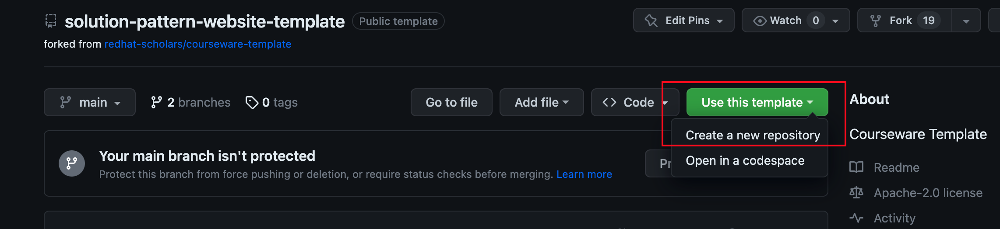
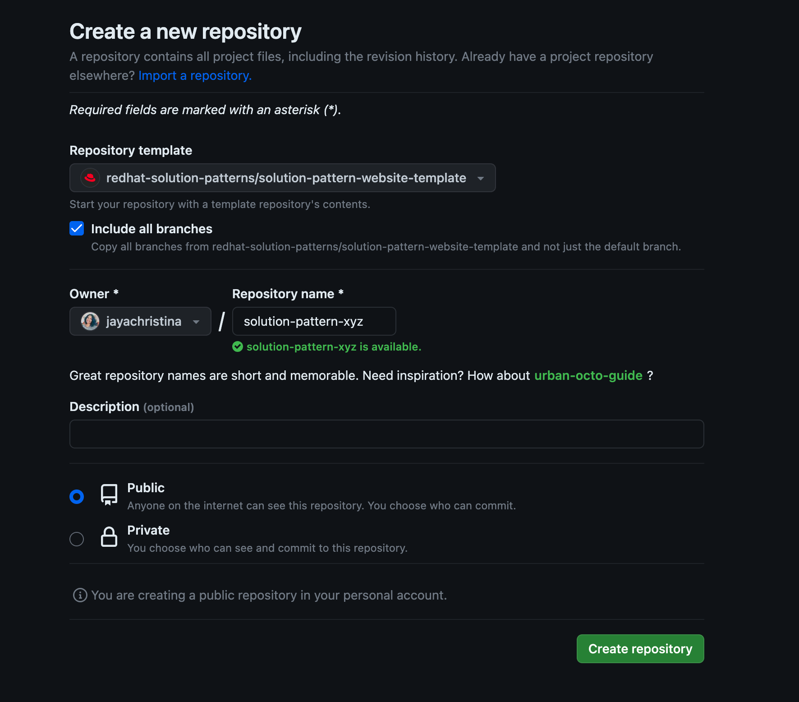

Quickstart Guide
Run through this 15-minute section to get started quickly. If you’re looking for a detailed guide refer to the full guide.
1. Creating a new project
To save you some time and quickly get started documenting, we’ll use as a foundation the Solution Pattern website template.
-
Open the template’s repository and click on the green button "Use this template" and choose Create a new repository;
 -
Choose the following options in Create a new repository page that is displayed:
-
Check the Include all branches to ensure the github pages are deployed correctly.
-
Enter your repository name (e.g.
solution-pattern-xyz) and a description -
Choose an appropriate Owner (your personal account or one of your organizations). Once you’re ready to publish your first version, you can move or fork the repository into the redhat-solution-patterns organization.
-
To avail of github pages to publish your documentation, keep the repository as Public.
-
Click on "Create repository";

-
-
In a few seconds your repo will ready for use.
2. Building and Running the project
Next, let’s build and run the project on development mode.
-
Clone the new repository to your local machine using
git clonefrom your local CLI.You can rely on hot-reload features during your development; therefore, you’ll save time validating your implementation’s output results. -
In a terminal, navigate to your project’s repository;
-
Build and start the project with:
npm install npx gulp -
A new page should open on your browser pointing to http://localhost:3000/solution-pattern-template/index.html
3. Next actions
-
Get familiar with the project’s structure.
-
Know the available capabilities to complete your document.
-
Learn how to publish the pattern as a github page.